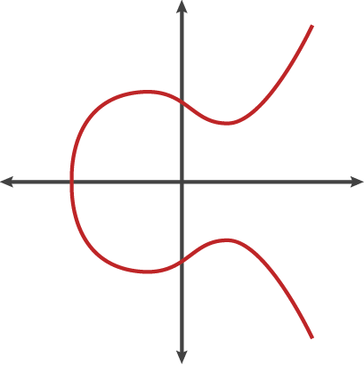
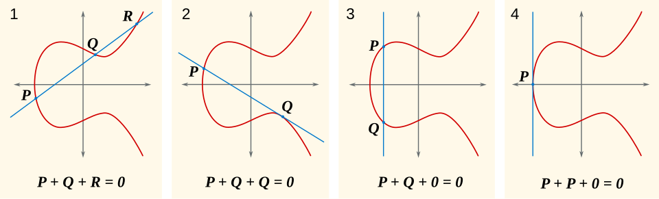

La cryptographie est omniprésente sur Internet. Sans elle, pas de sécurisation des connexions, et n’importe qui pourrait voir ce que l’on fait sur Internet.
Aujourd’hui la cryptographie recommandée est l’ECC (Elliptic Curve Cryptography), qui se base sur des fonctions mathématiques spéciales : les courbes elliptiques.
 Figure 1: Courbe elliptique ayant pour équation \(y^2 = x^3 - x + 1\) - Crédit : Cloudflare
Une courbe elliptique est une fonction mathématique particulière où :
 Figure 2: Opérations possibles sur une courbe elliptique - Crédit : SuperManu, CC BY-SA 3.0 <https://creativecommons.org/licenses/by-sa/3.0>, via Wikimedia Commons
Le plus intéressant dans ces courbes est le fait qu’il est très simple d’additioner des points, mais presque impossible de revenir en arrière.
Cette propriété est appelé le problème du logarithme discret sur les courbes elliptiques, et est la base de la sécurité de l’ECC.
Autrement dit, si on connait le point de départ et le résultat final, on ne peut pas savoir combien de fois l’opération a été faite.
Historiquement, pour sécuriser le trafic internet en HTTPS, le chiffrement RSA1 était et est encore utilisé par soucis de compatibilité avec les systèmes plus anciens.
Cependant, les algorithmes basés sur les courbes elliptiques présentent plusieurs avantages majeurs :
C’est pourquoi les protocoles modernes (TLS, signatures numériques, cryptomonnaies, etc.) privilégient aujourd’hui l’utilisation de l’ECC.
Les signatures numériques peuvent également utiliser les courbes elliptiques, c’est le cas de ECDSA (Elliptic Curve Digital Signature Algorithm). ECDSA est notamment utilisé dans les cryptomonnaies afin de s’assurer que la transaction émise provienne bien du bon débiteur. Sinon, quelqu’un pourrait se faire passer pour quelqu’un d’autre et effectuer des transactions à son insu…
Cependant, comme tout système, ECDSA peut présenter des vulnérabilités si son algorithme est mal implémenté. En effet, ECDSA se base sur un nombre généré aléatoirement (\(k\)) à chaque signature. Sinon, avec uniquement deux signatures, il est possible de calculer la clé privée, et donc de pouvoir signer des messages en se faisant passé pour quelqu’un d’autre. C’est ce qu’il s’est passé sur la PlayStation 3, où l’implémentation de Sony utilisait un \(k\) statique, ce qui a permis à des hackers de pouvoir exécuter Linux sur la console (le jailbreak).
Rivest Shamir Adleman, algorithme de chiffrement basé sur la difficulté de la factorisation de très grands nombres entiers (environ 600 chiffres) ↩︎